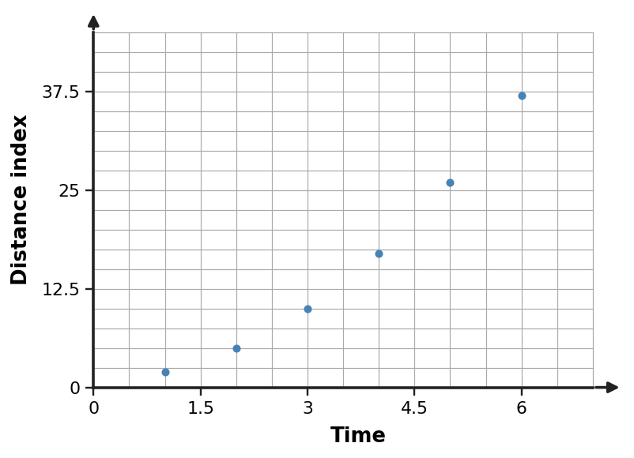

1. Describe the trend in the scatter plot and decide whether a linear model is reasonable for the displayed data. Support your decision with the pattern of points.

1. Describe the trend in the scatter plot and decide whether a linear model is reasonable for the displayed data. Support your decision with the pattern of points.

2. A linear model is $y=-2x-6$. Use the model to predict $y$ when $x=8$ and interpret the result as a model prediction rather than an exact observed value.
3. A model for a subscription total is $C=-12m+173$, where $m$ is months and $C$ is dollars. Interpret both the slope and intercept in context.
4. A data set is shown below. A student says a straight line fits the pattern perfectly. Assess the reasoning using the changes in the outputs.
| $x$ | $y$ |
|---|---|
| $0$ | $24$ |
| $1$ | $28$ |
| $2$ | $33$ |
| $3$ | $39$ |
5. Data were observed for inputs from $x=3$ through $x=9$. A model is used to predict the output at $x=5$. Classify the prediction as interpolation or extrapolation and explain which is generally safer when the observed trend is only approximately linear.
6. Use the observed-versus-predicted table to judge whether the model errors are small and balanced enough for a rough trend estimate. Identify the largest absolute error.
| $Input$ | $Observed$ | $Predicted$ | $Observed - Predicted$ |
|---|---|---|---|
| $1$ | $20$ | $20$ | $0$ |
| $2$ | $24$ | $23$ | $1$ |
| $3$ | $29$ | $30$ | $-1$ |
| $4$ | $33$ | $31$ | $2$ |